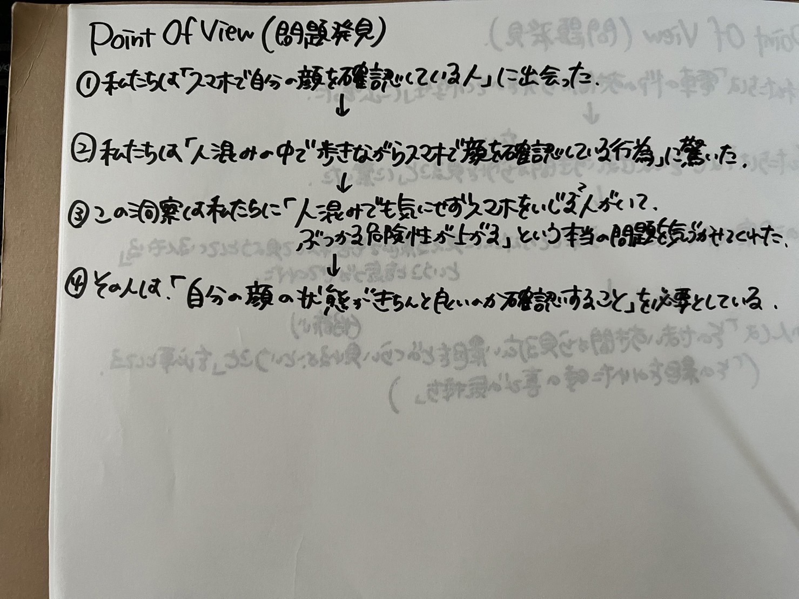
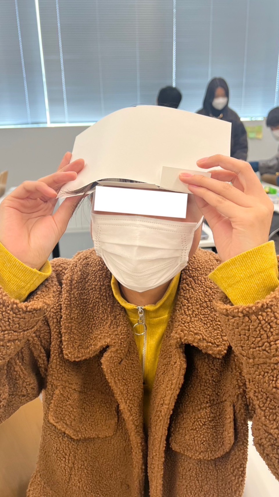
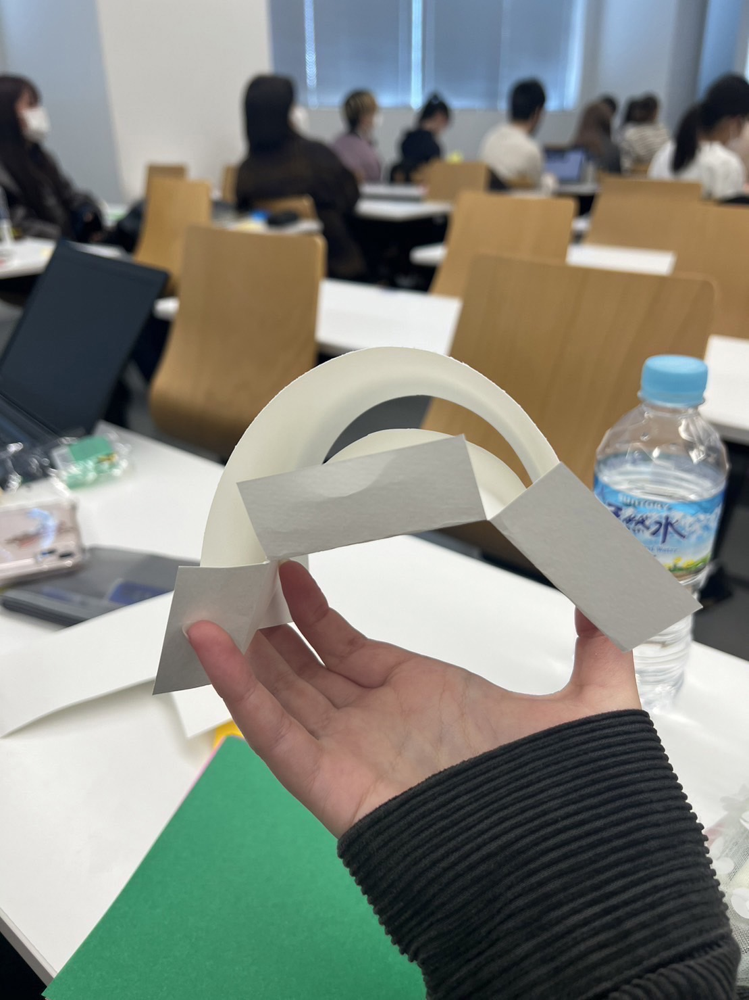
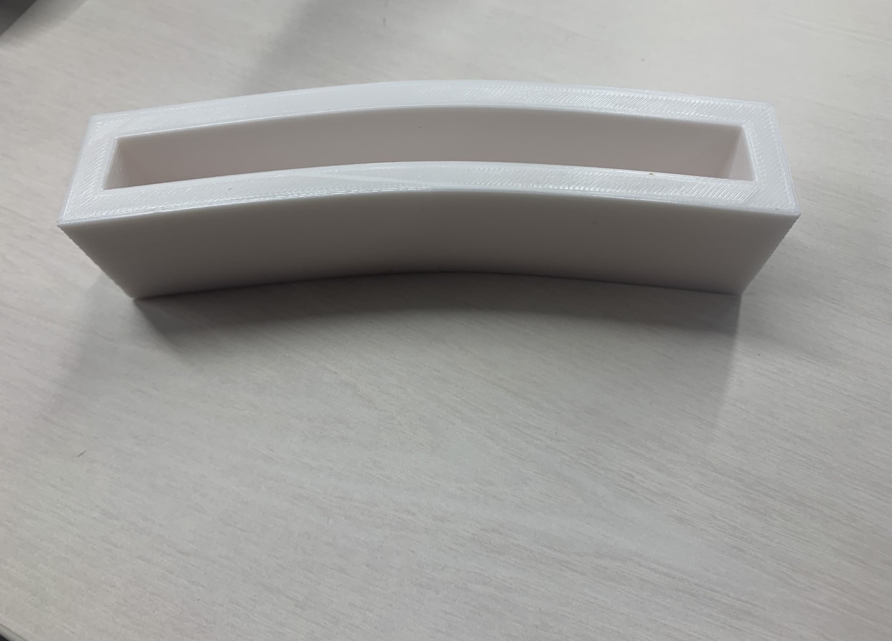
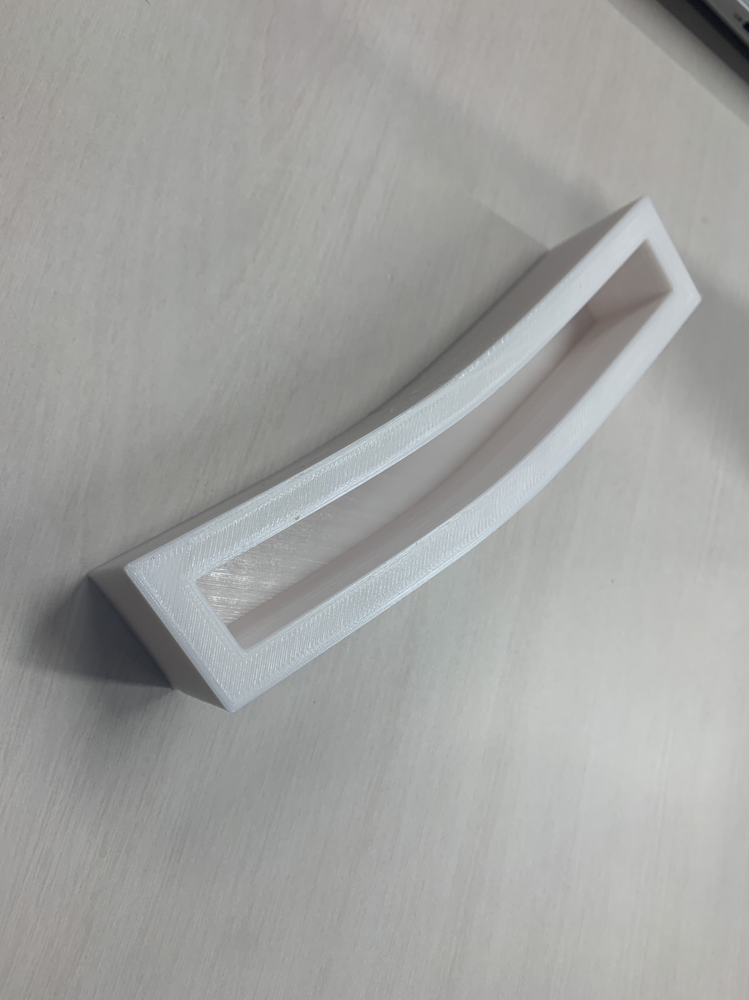

私たちの班は街中で携帯や鏡を見て前髪を直している人をピックアップし、
スマホのながら歩きの危険行為を問題ととらえまた、どうしたら前髪
を崩さないでいられるか考え、それを解決策とした
製品製作
プロトタイプ


完成作品


前髪カバー
このくぼみの部分に前髪を入れることで崩れないままキープまたは、
前髪を直すことができる
感想
・太さのサイズ感が太すぎたために予想より太い前髪カバーになってしまった
・長さはちょうど良かったモノの高さはもう少し高くすると完全に覆うことができた
のでそこも改善点だと感じる
・歩きながら使用できるようにするために眼鏡のテンプルのようなモノを作る予定だった
が前髪の位置が高いために製作することが難しかった。
使用機材
3Dプリンタ